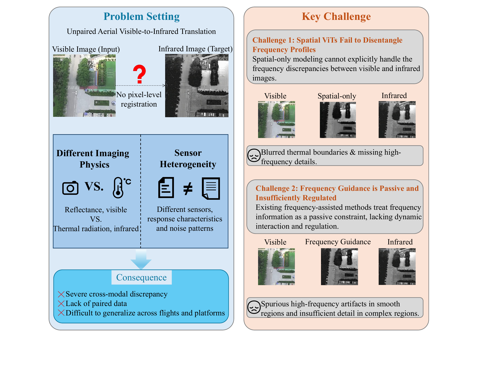
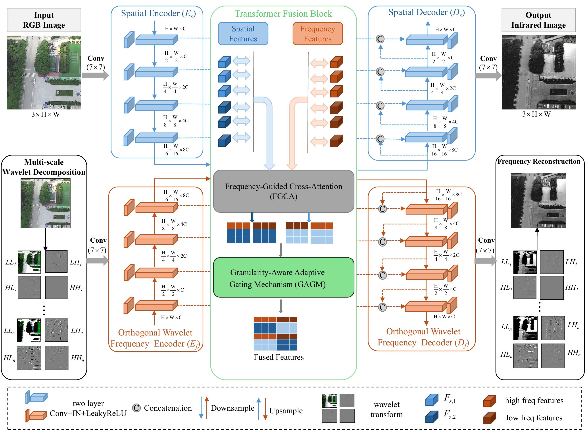
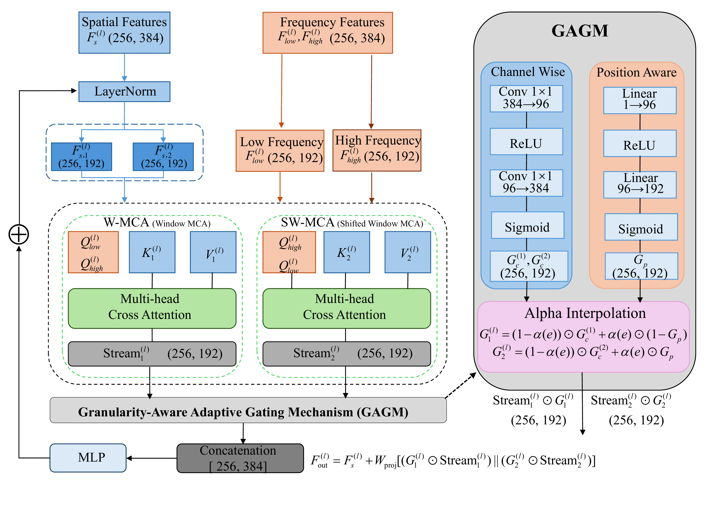
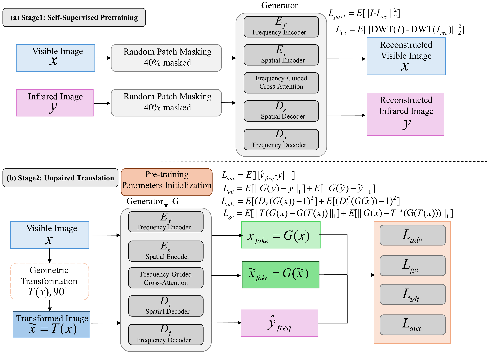
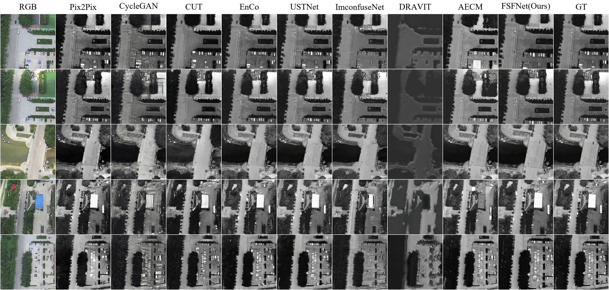
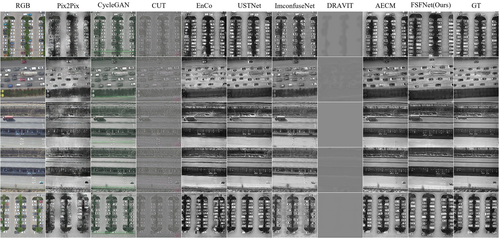
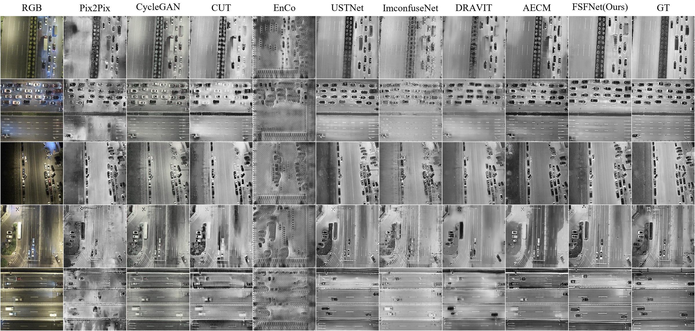

Prepared for the Special Issue on Multisource and Multimodal Remote Sensing: Representation, Understanding, Reasoning, and Generation, IEEE Journal of Selected Topics in Applied Earth Observations and Remote Sensing (JSTARS)
Corresponding author: Zhifei Zhang
Core architecture code has been pre-released in this repository.
Aerial visible-to-infrared image translation generates infrared imagery from visible inputs, expanding infrared data acquisition in complex aerial scenarios. Although existing approaches built on convolutional neural networks or vision transformers capture local details and global scene context, they lack explicit modeling of multiscale frequency semantics and rely on implicitly gated fusion that fails to characterize local structural complexity, leading to distorted energy distributions, structural blurring, and spurious high-frequency artifacts in homogeneous regions.
To address these challenges, a frequency-guided spatial-frequency collaborative network (FSFNet) is proposed to explicitly decouple multiscale spectral structures while preserving spatial topological details via a dual-path encoder-decoder framework. An orthogonal wavelet frequency encoder and a frequency-guided cross-attention mechanism are introduced, in which the decoupled low- and high-frequency representations serve as queries for spatial context retrieval under a layer-wise dynamic dual-stream window exchange. A granularity-aware adaptive gating mechanism is further designed to quantify local structural roughness through parameter-free statistics and progressively modulate channel- and position-wise fusion according to regional complexity, while a pluggable auxiliary frequency decoder preserves target-domain spectral structure during training at zero additional inference cost.
Experiments on three aerial benchmarks show that our FSFNet ranks first in 11 of 18 evaluation cases and among the top two in 16, achieving the best LPIPS and SSIM on all three datasets. On AVIID-3, FSFNet reduces the FID by 11.5% and improves the PSNR by 0.65 dB over a purely spatial baseline while sustaining 27.7 FPS.

Overview of the unpaired aerial visible-to-infrared translation problem and the two key challenges motivating this work.
The primary contributions are:

Overall architecture of the proposed FSFNet. The spatial structure encoder Es and the discrete wavelet frequency encoder Ef extract complementary representations in parallel.
FSFNet is a dual-path encoder–decoder framework that explicitly decouples multiscale frequency representations from spatial topological structure. A spatial structure encoder and a discrete wavelet frequency encoder operate in parallel; the decoupled low- and high-frequency representations then serve as queries in a frequency-guided cross-attention (FGCA) module that retrieves spatial context under a layer-wise dynamic dual-stream window exchange; and a granularity-aware adaptive gating mechanism (GAGM) quantifies local structural roughness through parameter-free statistics to modulate channel- and position-wise fusion according to regional complexity. During training, a pluggable auxiliary frequency decoder enforces frequency-domain reconstruction; it is discarded at inference, adding zero additional cost.

Structure of FGCA. Decoupled low- and high-frequency representations act as queries for spatial context retrieval.

Overview of the two-stage training strategy for FSFNet: self-supervised dual-domain pretraining followed by unpaired cross-modal translation.
| Dataset | Illumination | Total Pairs | Train / Test | Resolution (pixels) |
|---|---|---|---|---|
| AVIID-3 | Daytime | 3,216 | 2,412 / 804 | 512 × 512 |
| Day-DroneVehicle | Daytime | 7,660 | 5,745 / 1,915 | 640 × 512 |
| Night-DroneVehicle | Nighttime | 13,140 | 9,855 / 3,285 | 640 × 512 |
(a) Quantitative comparison on the AVIID-3 dataset.
| Method | Metric | |||||
|---|---|---|---|---|---|---|
| FID↓ | KID↓ | LPIPS↓ | RMSE↓ | SSIM↑ | PSNR↑ | |
| Pix2Pix | 84.24536 | 0.039870 | 0.284519 | 29.989248 | 0.515265 | 18.956686 |
| CycleGAN | 82.14132 | 0.025350 | 0.300864 | 37.436294 | 0.404162 | 16.847453 |
| CUT | 95.33009 | 0.033596 | 0.350033 | 38.927721 | 0.405757 | 16.492552 |
| EnCo | 84.06712 | 0.028891 | 0.241989 | 26.820914 | 0.499146 | 19.731120 |
| DR-AVIT | 214.85513 | 0.145197 | 0.593349 | 70.787318 | 0.302367 | 11.627863 |
| USTNet | 50.87250 | 0.006881 | 0.208130 | 25.571699 | 0.574911 | 20.204583 |
| ImconfuseNet | 97.62250 | 0.032440 | 0.283797 | 33.005892 | 0.455096 | 17.926994 |
| CycleMamba | 179.79673 | 0.163505 | 0.649781 | 81.332077 | 0.162434 | 9.975021 |
| AECM | 43.26300 | 0.001933 | 0.246329 | 38.473896 | 0.466449 | 16.835820 |
| FSFNet (Ours) | 45.00005 | 0.004547 | 0.194302 | 23.714777 | 0.584978 | 20.851626 |
(b) Quantitative comparison on the Day-DroneVehicle dataset.
| Method | Metric | |||||
|---|---|---|---|---|---|---|
| FID↓ | KID↓ | LPIPS↓ | RMSE↓ | SSIM↑ | PSNR↑ | |
| Pix2Pix | 160.00029 | 0.137296 | 0.313117 | 54.334250 | 0.353191 | 13.638398 |
| CycleGAN | 94.05906 | 0.054729 | 0.342277 | 58.777830 | 0.268798 | 12.877211 |
| CUT | 445.85667 | 0.532393 | 0.684109 | 73.757324 | 0.063644 | 10.802577 |
| EnCo | 83.00264 | 0.048721 | 0.299899 | 55.599082 | 0.376335 | 13.553605 |
| DR-AVIT | 443.69373 | 0.452442 | 0.853234 | 57.026964 | 0.343010 | 13.132876 |
| USTNet | 27.91764 | 0.003475 | 0.216254 | 47.719773 | 0.486843 | 14.992926 |
| ImconfuseNet | 69.78602 | 0.033836 | 0.302829 | 48.990387 | 0.363916 | 14.577407 |
| CycleMamba | 244.53473 | 0.199789 | 0.741614 | 75.562867 | 0.129687 | 10.700540 |
| AECM | 25.06893 | 0.000781 | 0.232957 | 54.929075 | 0.431469 | 13.689555 |
| FSFNet (Ours) | 25.16958 | 0.001737 | 0.209149 | 47.153408 | 0.500442 | 15.094191 |
(c) Quantitative comparison on the Night-DroneVehicle dataset.
| Method | Metric | |||||
|---|---|---|---|---|---|---|
| FID↓ | KID↓ | LPIPS↓ | RMSE↓ | SSIM↑ | PSNR↑ | |
| Pix2Pix | 83.18299 | 0.072839 | 0.347109 | 50.658449 | 0.358204 | 14.140496 |
| CycleGAN | 50.52592 | 0.030129 | 0.391831 | 55.457723 | 0.304812 | 13.385118 |
| CUT | 79.82762 | 0.062109 | 0.402816 | 56.226394 | 0.329726 | 13.237177 |
| EnCo | 137.48470 | 0.122597 | 0.596731 | 63.097004 | 0.153195 | 12.238241 |
| DR-AVIT | 39.86782 | 0.020800 | 0.342772 | 52.329855 | 0.359702 | 13.856874 |
| USTNet | 18.39930 | 0.004124 | 0.301192 | 48.862267 | 0.441370 | 14.495124 |
| ImconfuseNet | 68.15952 | 0.048021 | 0.365475 | 46.865640 | 0.335152 | 14.856630 |
| CycleMamba | 311.45272 | 0.342749 | 0.646167 | 63.269658 | 0.206319 | 12.169338 |
| AECM | 17.61687 | 0.004252 | 0.328866 | 57.859153 | 0.346517 | 13.052859 |
| FSFNet (Ours) | 17.95355 | 0.003609 | 0.298798 | 48.991262 | 0.447708 | 14.485825 |
(a) Ablation results on the AVIID-3 dataset.
| N | Component | Metric | |||||||
|---|---|---|---|---|---|---|---|---|---|
| dual-path | freq. loss | GAGM | FID↓ | KID↓ | LPIPS↓ | RMSE↓ | SSIM↑ | PSNR↑ | |
| 0 | ✗ | ✗ | ✗ | 50.82725 | 0.006881 | 0.208130 | 25.571699 | 0.574911 | 20.204583 |
| 1 | ✓ | ✗ | ✗ | 46.19873 | 0.005581 | 0.204816 | 25.874743 | 0.573891 | 20.171928 |
| 2 | ✓ | ✓ | ✗ | 45.42301 | 0.005299 | 0.196854 | 24.538258 | 0.582915 | 20.591140 |
| 3 | ✓ | ✓ | ✓ | 45.00005 | 0.004547 | 0.194302 | 23.714777 | 0.584978 | 20.851626 |
(b) Ablation results on the Day-DroneVehicle dataset.
| N | Component | Metric | |||||||
|---|---|---|---|---|---|---|---|---|---|
| dual-path | freq. loss | GAGM | FID↓ | KID↓ | LPIPS↓ | RMSE↓ | SSIM↑ | PSNR↑ | |
| 0 | ✗ | ✗ | ✗ | 27.91764 | 0.003475 | 0.216254 | 47.719773 | 0.486843 | 14.992926 |
| 1 | ✓ | ✗ | ✗ | 25.74340 | 0.002036 | 0.213349 | 48.694017 | 0.493474 | 14.784883 |
| 2 | ✓ | ✓ | ✗ | 27.14012 | 0.002664 | 0.221713 | 49.416147 | 0.487257 | 14.736482 |
| 3 | ✓ | ✓ | ✓ | 25.16958 | 0.001737 | 0.209149 | 47.153408 | 0.500442 | 15.094191 |
(c) Ablation results on the Night-DroneVehicle dataset.
| N | Component | Metric | |||||||
|---|---|---|---|---|---|---|---|---|---|
| dual-path | freq. loss | GAGM | FID↓ | KID↓ | LPIPS↓ | RMSE↓ | SSIM↑ | PSNR↑ | |
| 0 | ✗ | ✗ | ✗ | 18.39930 | 0.004124 | 0.301192 | 48.862267 | 0.441370 | 14.495124 |
| 1 | ✓ | ✗ | ✗ | 58.47422 | 0.044026 | 0.363766 | 54.264105 | 0.395591 | 13.556499 |
| 2 | ✓ | ✓ | ✗ | 19.23238 | 0.004763 | 0.302936 | 49.074746 | 0.443146 | 14.470825 |
| 3 | ✓ | ✓ | ✓ | 17.95355 | 0.003609 | 0.298798 | 48.991262 | 0.447708 | 14.485825 |
Model complexity and inference efficiency (input 256×256, batch size 1, single NVIDIA RTX 5090).
| Method | Params (M) | FLOPs (G) | Time (ms) |
|---|---|---|---|
| Pix2Pix | 57.18 | 36.30 | 2.00 |
| CycleGAN | 28.29 | 113.73 | 18.06 |
| CUT | 16.91 | 128.26 | 6.51 |
| EnCo | 14.65 | 128.26 | 10.68 |
| DR-AVIT | 56.84 | 162.67 | 24.56 |
| USTNet | 33.69 | 69.49 | 29.57 |
| ImconfuseNet | 0.28 | 32.31 | 12.33 |
| CycleMamba | 64.63 | 44.78 | 27.38 |
| AECM | 27.22 | 128.26 | 9.23 |
| FSFNet (Ours) | 35.44 | 84.30 | 36.14 |
FSFNet contains 35.44 M parameters and requires 84.30 GFLOPs per inference. Relative to the purely spatial predecessor (USTNet, 33.69 M), the proposed spatial-frequency collaboration introduces only 1.75 M additional parameters (+5.2%) while improving all six metrics; since the auxiliary frequency decoder is discarded after training, it contributes no inference cost. The per-image inference time of 36.14 ms corresponds to a throughput of about 27.7 FPS, which satisfies the real-time requirements of typical aerial remote sensing platforms.
Qualitative comparisons between FSFNet and nine competitive baselines. Five representative aerial scenes are selected for each dataset, covering diverse topographical structures, densely distributed micro-targets, and extreme diurnal illumination variations. From left to right: input visible image, results of Pix2Pix, CycleGAN, CUT, EnCo, USTNet, ImconfuseNet, DR-AVIT, AECM, FSFNet (Ours), and the ground truth (GT) infrared image.

Qualitative comparison on the AVIID-3 dataset. Rows 1–2: urban building complexes and vegetation; Row 3: river crossing and bridge infrastructure; Rows 4–5: industrial structures and parking facilities.

Qualitative comparison on the Day-DroneVehicle dataset under challenging daytime scenarios. Rows 1 and 5: densely packed parking lots; Rows 2–4: multi-lane urban roadways and highways with fast-moving traffic.

Qualitative comparison on the Night-DroneVehicle dataset under low-light nighttime environments. Rows 1–3: signalized urban intersections with headlight glare; Rows 4–5: dark arterial roads and interchanges.
If you find this work useful, please consider citing it:
@article{li2026fsfnet,
title = {Frequency-Guided Spatial-Frequency Collaborative Network for
Unregistered Aerial Visible-to-Infrared Image Translation},
author = {Li, Ying and Li, Zhikun and Zhang, Zhifei and Liu, Yizhang and Guang, Mingjian},
journal = {IEEE Journal of Selected Topics in Applied Earth Observations
and Remote Sensing},
year = {2026},
note = {Prepared for the IEEE JSTARS Special Issue on Multisource and Multimodal Remote Sensing}
}